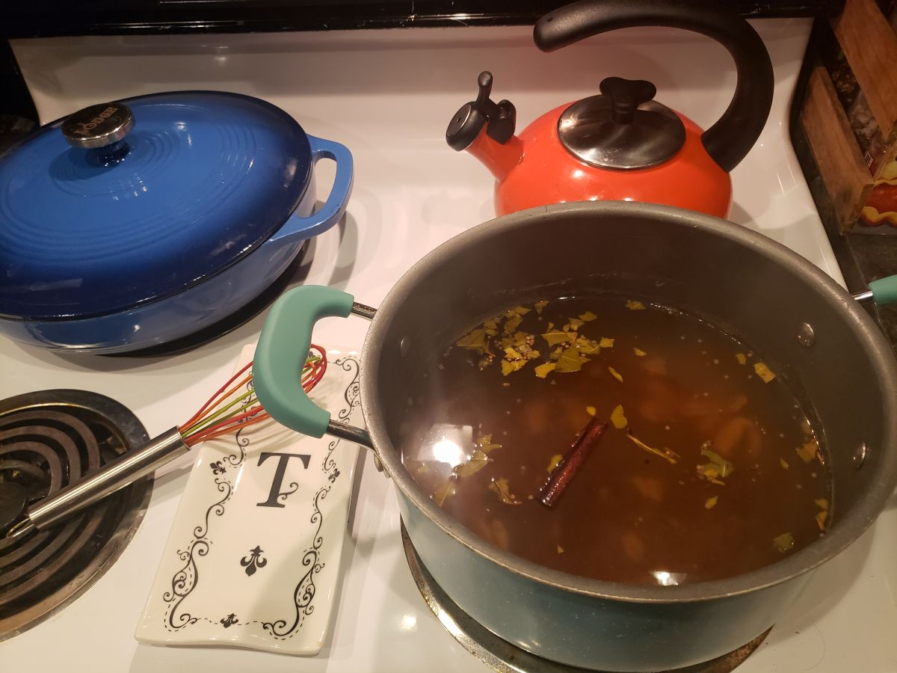
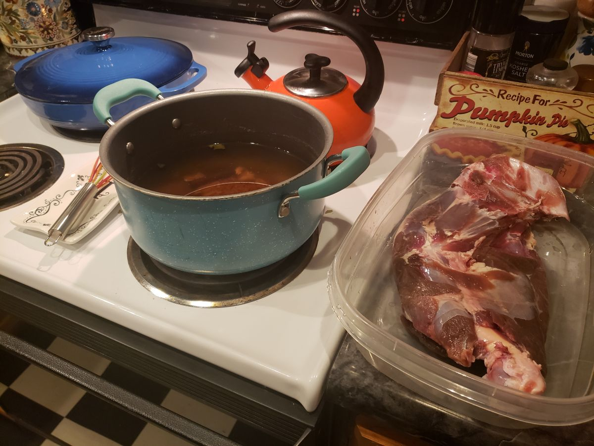
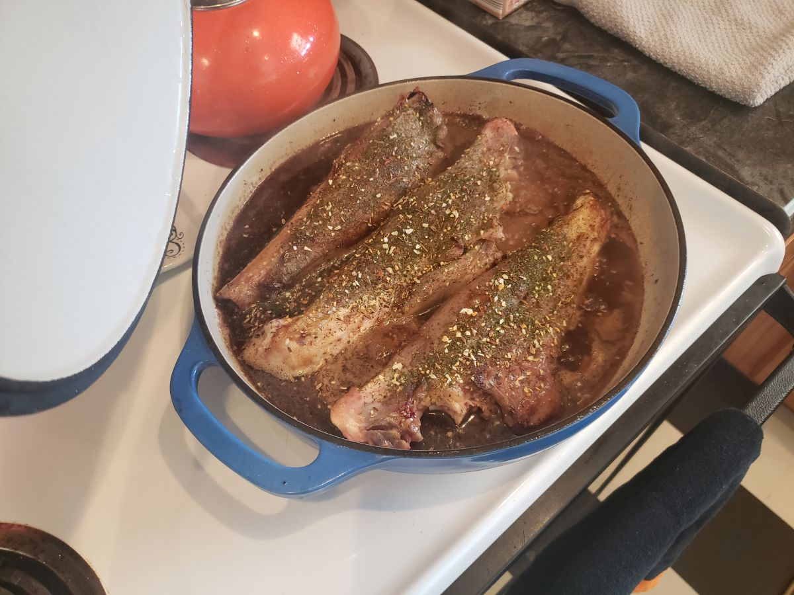
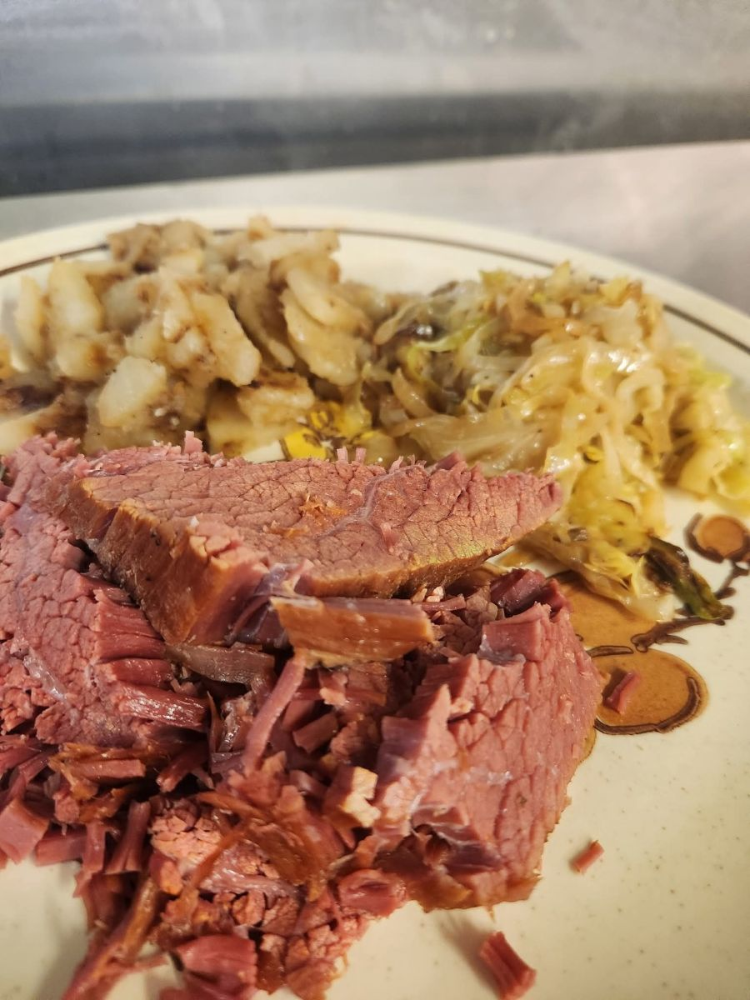

Vension, a red meat simliar to beef or lamb, has countless prepartation options. Pot roast was one of the meals I mentioned earlier that I loved growing up, whether it was prepared by my mother or my father. For my own home, I prefer to brine the roast in advance. This process is known as "corning". The meat is submerged for several days in a liquid with aromatics and a curing salt. The result is the same flavorful, rose-colored roast served as corned beef, but lower in fat and cholesterol.
To prepare the corned venison roast, first make the brine. In a large pot, combine 1 gallon of water, 1 cup of kosher salt, 1/2 cup of sugar, 2 tablespoons of pink curing salt (Prague Powder #1), 2 tablespoons of pickling spice, 4 crushed garlic cloves, and 1 sliced onion. Bring to a boil, stirring to dissolve the salts and sugar. Remove from heat and let cool to room temperature. Submerge a 3-4 pound venison roast in the brine, cover, and refrigerate for 5-7 days.
After the brining period, remove the roast from the liquid and rinse well under cold water. Place the roast in a large pot and cover with fresh water. Add 2 sliced onions, 4 crushed garlic cloves, 4 bay leaves, and 1 tablespoon of black peppercorns. Bring to a boil, then reduce to a simmer. Cover and cook for 3-4 hours, or until the meat is tender. Remove the roast from the liquid and let rest for 10-15 minutes before slicing and serving.
cook time
